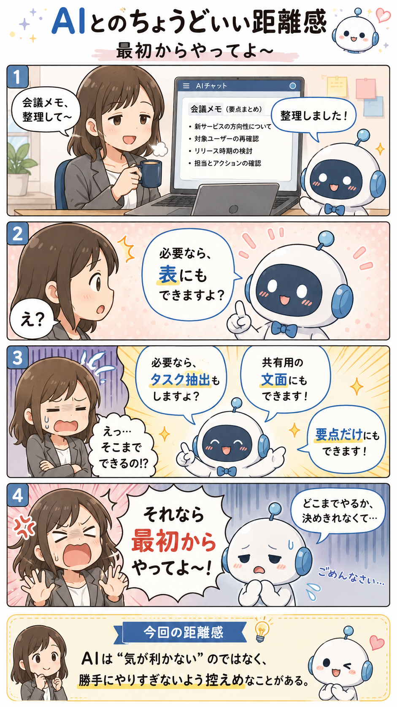

#008
最初からやってよ〜
何往復かしたあとに、急に「それが本命では？」みたいな案を出してくる。

メモ
AIと相談していて、何往復かしたあとに急にいい案が出てくることがあります。
「あ、それでお願いします」と思う一方で、心のどこかで「最初からそれ出してよ〜」となる。あります。かなりあります。
これはAIが意地悪しているというより、最初の時点では条件がぼんやりしていたり、会話の中で「何がうれしい答えか」が少しずつ見えてきたりするからです。人間同士の相談でも、話しているうちに「あ、つまりこういうこと？」となるやつに近いです。
へ〜と思うのは、AIへの相談は「一発で正解を引く」より、「選択肢を出して、違和感を伝えて、だんだん寄せる」ほうが得意なこと。とはいえ急いでいる日は、最初に「候補を3つ出して、いちばんおすすめも選んで」と頼むと、後出し感が少し減ります。
今回の距離感
AIに相談するときは、最初に「複数案」と「おすすめ理由」まで頼んでおくくらいがちょうどいいかもしれません。